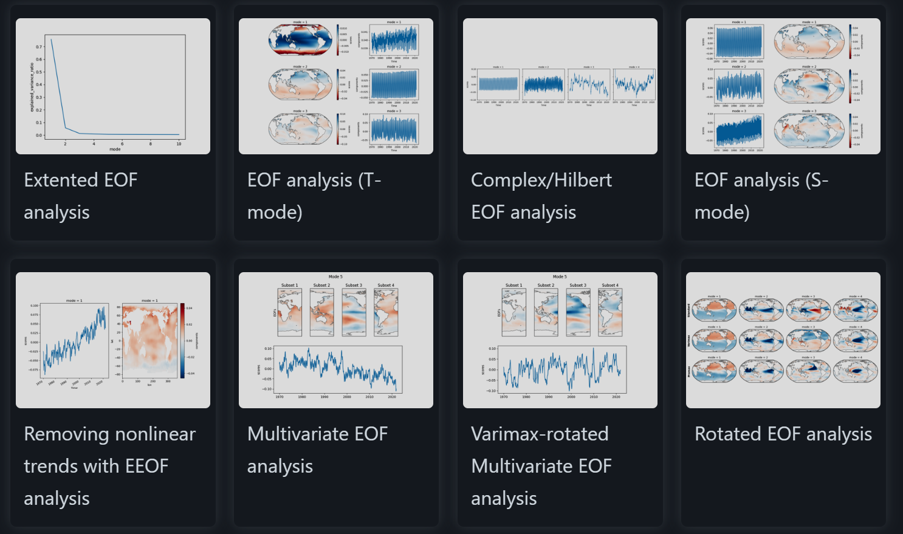
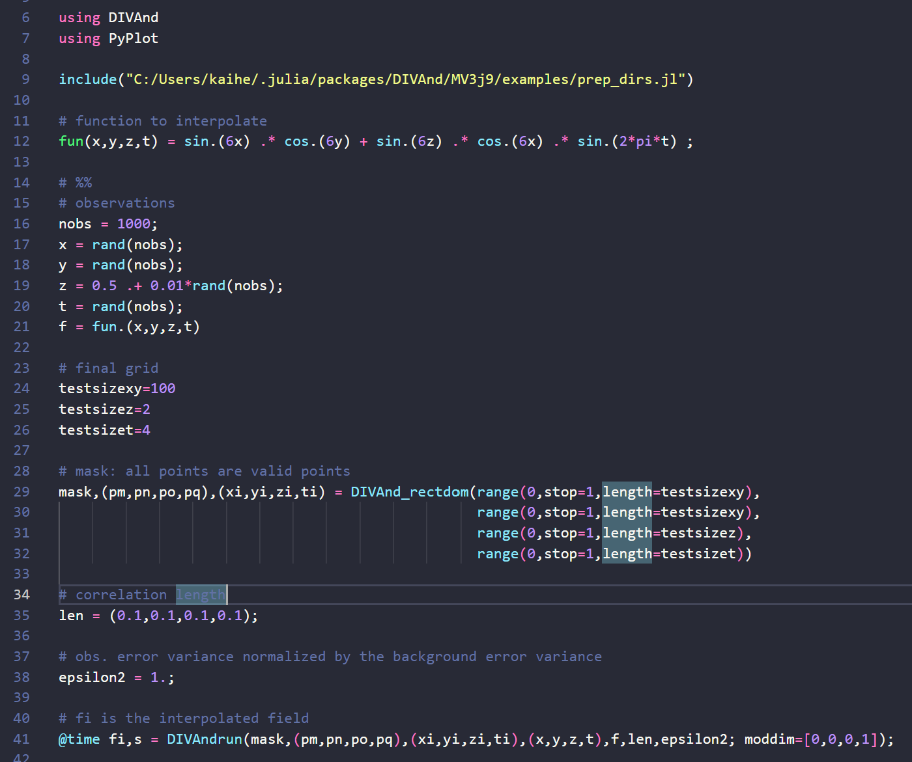

計算機科学が拓く海洋学のフロンティア
機械学習は、データからパターンを見つけ出し、構造の理解と予測を助ける技術です。大量のデータを処理し、モデルを構築することで、従来の手法では得られなかった洞察を得ることができます。特に、海洋学においては、膨大な量のデータが存在し、それを効率的に解析する方法として機械学習・AIが注目されています。これらの技術は、海洋循環の動態や生態系の変化を理解するのに役立つ新しい知見を提供します。
海洋データは、その規模が非常に大きく、データの形式も多様です。例えば、人工衛星や大規模数値シミュレーションから得られるデータはペタバイト単位に及びます。これらのデータを処理し、分析するために機械学習とAIが活用されています。機械学習は、気候モデルの予測精度を向上させ、海洋の健康状態をモニタリングするツールとして有効です。また、深層学習は物理法則で表せない非常に複雑な現象や生物の行動パターンを予測するためのモデル構築に使われており、GPTのような大規模言語モデルはデータ解析の補助や形式が多岐に及ぶメタデータの統合的処理などに使われ始めています。
Python package xeofs
メインの解析ツールとしては、PythonとMATLABが広く使用されています。Pythonは、そのオープンソースの性質と豊富なライブラリにより、非常に多くの研究者に支持されています（普通の人が想像できる範囲のことは大抵できます）。MATLABについては、高度に専門的な数値計算や解析について優れた既存パッケージが存在している優位性があります。これらのツールは、海洋データの解析において重要な役割を果たしています。
An example code of Julia
Julia言語は、近年注目を集めている比較的新しいプログラミング言語です。Juliaは、PythonやMATLABに比べて高速でありながら、簡潔なコードを書ける点が特徴です。特に、大規模データの解析やリアルタイム処理においてその利点が顕著です。また、Juliaは並列処理や分散計算にも対応しており、大量の海洋データを効率的に処理するにはもってこいです。またPythonと同様オープンソースであることから、参入も比較的容易です。これらの特徴から、Juliaは今後の海洋学研究において重要な役割を果たすことが期待されています。例えば、Data Interpolating Variational Analysis や Oceananigans のような優れたパッケージが、Juliaで書かれて公開されています。
関連研究
- Yamazaki, K., Bindoff, N. L., Phillips, H. E., Nikurashin, M., Herraiz-Borreguero, L., & Spence, P. (2025). Unlocking southern ocean under-ice seasonality with a new monthly climatology. Journal of Geophysical Research: Oceans, 130, e2024JC020920.